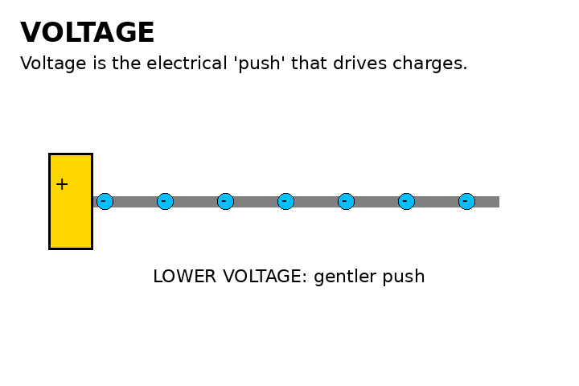
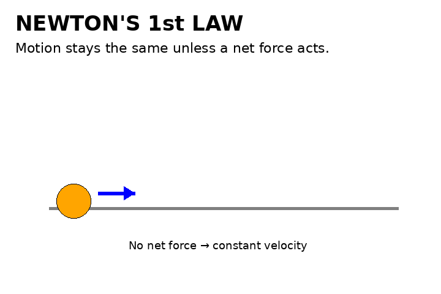
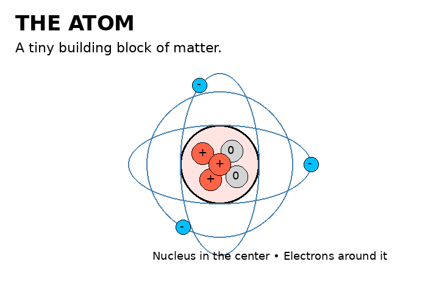
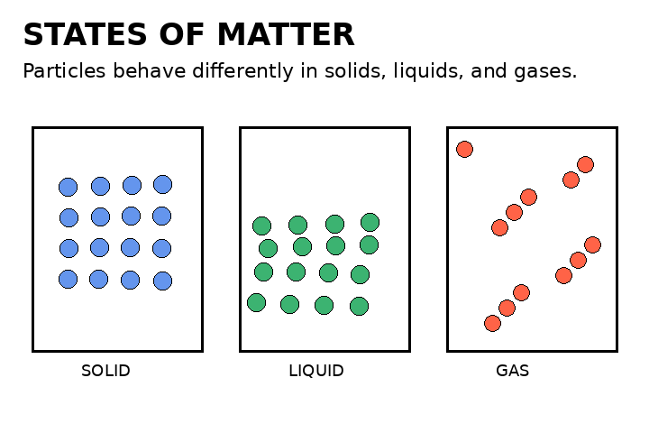
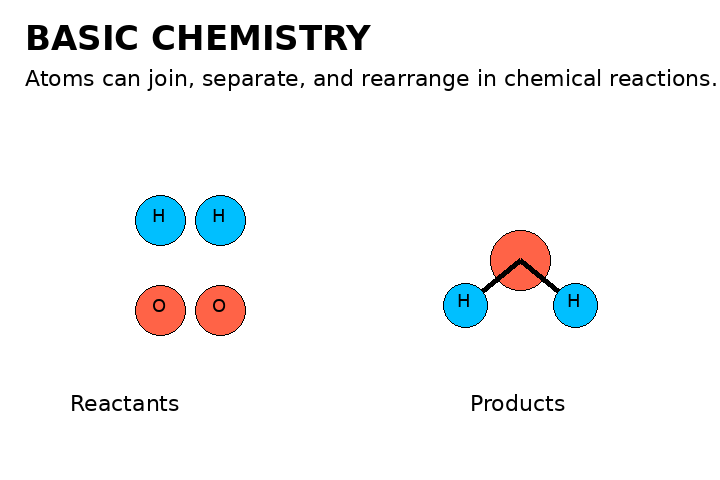

Matter & Energy
Electrical energy, circuits, conductors, insulators, current, and transformations of energy.
Move from describing systems to explaining how they interact.

Electrical energy, circuits, conductors, insulators, current, and transformations of energy.

Lift, weight, thrust, and drag; qualitative force balance and motion.

Solar system, space exploration, relative positions and motions of celestial bodies.

Classification, biodiversity, ecosystems, and impacts of human activity.

Atoms as building blocks of matter; elements and compounds introduced as preparation for later grades.